CalCOFI.io
Documentation
![]()
Start here
CalCOFI.io is the open, versioned, integrated database of CalCOFI’s observations — the physical, chemical and biological measurements of one of the world’s longest ocean time series, from sixteen source datasets, in one schema — and the products around it: an explorer that runs in your browser, packages for R and Python, a page and a citable record for every dataset, and the portals the data reach. This book is its documentation, for everyone who uses the data, builds on it, or contributes to it.

Five phases, one system
The SIO-CalCOFI data management plan organizes the work into five phases. They are also the book’s spine: each phase has a product that realizes it and a chapter that explains it, and Figure 1 reads left to right along them.
- Ingest. Each source dataset — a bottle database, a CTD archive, a net-tow spreadsheet — is turned into the shared schema by one reproducible notebook, with the provider’s own identifiers kept as columns and every open question filed with the provider. → Ingesting a dataset, Metadata & the ingest loop.
- Integrate. The shards join on a handful of shared keys — the cruise, the station, the sampling event, the taxon, the measured quantity — under one naming convention, and a release is cut only after its keys and its bounds have been checked. → The database, Keys and integrity, Naming conventions, Releases.
- Publish. From the release, one record per dataset is generated, and from that record the dataset pages, the metadata documents and the packages that reach ERDDAP, OBIS, EDI and the archives — so a description written once reaches every portal. → Portals, Cite this data.
- Visualize. The Explorer looks at the whole database through six lenses with nothing but a browser; the packages read the same bytes from R and Python; every dataset has a page. → Explore, Access the data.
- Synthesize. The plan, its tasks and their status, and the architecture that ties the rest together, kept as a living record. → The data management plan, Architecture, Status.
Which door is yours
| If you are … | start with | then |
|---|---|---|
| curious about the ocean off California, or a scientist who wants to see the data | Explore | Access the data, Cite this data |
| a data scientist writing queries or building on the release | Access the data | The database, Keys and integrity, Releases |
| a data provider, now or in future | Providing data to CalCOFI | Metadata & the ingest loop, Portals |
| on the CTD team | CTD QA/QC, start to release | Server access |
| on the data team, or building a CalCOFI.io product | Ingesting a dataset | Products, brand and uptime, Architecture |
| reporting on the program | The data management plan | Status |
Pick your row in Table 1; every chapter links onward to the next one you are likely to want.
How this book is kept true
Prose is authored; facts are generated. Every table of counts, columns, keys, datasets, portals or statuses is read from the record — the promoted release’s own sidecars and the registries in CalCOFI/workflows — when the book renders, so a page cannot describe a database that has since changed. Where a chapter states a rule, the rule is one the pipeline enforces, and the chapter says how. The source of every chapter is one file in CalCOFI/docs; the pencil in the margin edits it.